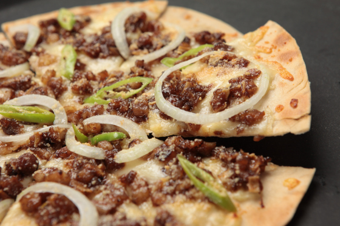

Sisig Pizza

Sisig Pizza is not a new dish. In fact, there has been a similar product included in the menu of a fast food Pizza chain in the Philippines some years back. To be honest, Sisig Pizza is something that will be appreciated by sisig lovers –- this is simply sisig presented differently.
Preparation Time: 15 mins.
Cooking Time: 20 mins.
Total Time: 35 mins.
Ingredients
- 3/4 lb. cooked sisig
- 1 large pizza dough
- 1 cup Alfredo sauce
- 1 medium yellow onion sliced crosswise into rings
- 4 pieces finger chili sliced diagonally
- 1 teaspoon chili flakes
Instructions
- Preheat the oven to 400.
- Meanwhile, place the pizza though in a flat surface. Pour the Alfredo sauce over the pizza though and spread it all throughout equally.
- Arrange the sisig over the Alfredo sauce. This is best done using your hands (it will be better if you wear plastic gloves during the process).
- Arrange the onion and sliced finger chili on top. Sprinkle chili flakes all over the pizza.
- Put the pizza in the oven. Bake for 20 minutes.
- Remove from the oven. Slice.
- Serve. Share and enjoy!